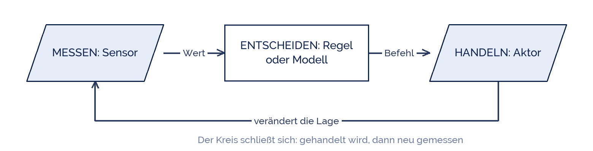

blandinejoannic
blandinejoannic
Good morning!
Nur das Schöne wird die Welt retten!
Fjodor Dostojewski
Nicht verzagen, Doc Alvers fragen!
Informatik — Klasse 9
Wenn Maschinen selbst entscheiden
Sprachassistenten, Smarthome, Bots und Drohnen — und ein eigenes Modell
Nicht verzagen, Doc Alvers fragen!
Kapitel 01
Was heißt automatisiert?
Drei Teile, immer dieselben
Nicht verzagen, Doc Alvers fragen!
Messen, entscheiden, handeln
Jede Automatisierung besteht aus diesen drei Teilen — vom Toaster bis zur Fabrik
Der Sensor misst, die Regel entscheidet, der Aktor tut etwas

Nicht verzagen, Doc Alvers fragen!
Vier Beispiele, dasselbe Muster
| System | misst | entscheidet | handelt |
|---|---|---|---|
| Heizung | Temperatur | unter 21 Grad? | Ventil auf |
| Sprachassistent | Schall | Weckwort erkannt? | Aufnahme starten |
| Windrad | Windrichtung | steht es schief? | Gondel drehen |
| Drohne | Lage und Höhe | kippt sie? | Motoren nachregeln |
Der Unterschied liegt allein in der Regel in der Mitte
Manche Regeln schreibt ein Mensch. Andere werden aus Beispielen gelernt
Nicht verzagen, Doc Alvers fragen!
Kapitel 02
Regel oder gelernt
Der wichtigste Unterschied dieser Stunde
Nicht verzagen, Doc Alvers fragen!
Zwei Arten, zu einer Entscheidung zu kommen
| feste Regel | gelerntes Modell | |
|---|---|---|
| kommt von | einem Menschen, der sie hinschreibt | vielen Beispielen |
| Beispiel | „unter 21 Grad: heizen“ | „das ist eine Katze“ |
| nachvollziehbar? | ja, man kann sie lesen | nur schwer |
| falsch, wenn | die Regel falsch gedacht war | die Beispiele schief waren |
Ein gelerntes Modell kennt keine Regeln — es erkennt Muster in dem, was es gesehen hat
Deshalb ist es nur so gut wie seine Beispiele
Nicht verzagen, Doc Alvers fragen!
Kapitel 03
Selbst trainieren
Teachable Machine im Browser
Nicht verzagen, Doc Alvers fragen!
So läuft der Versuch
Zwei Klassen wählen, zum Beispiel „Hand offen“ und „Hand zu“
Je Klasse mindestens 50 Bilder über die Webcam aufnehmen
Trainieren klicken — das dauert Sekunden
Testen: hält das Modell, was es verspricht?
Dann absichtlich austricksen: anderer Hintergrund, andere Person, weniger Licht
Nicht verzagen, Doc Alvers fragen!
Worauf ihr achten sollt
Nehmt ihr alle Bilder gleich auf, lernt das Modell den Hintergrund statt die Hand
Sind es von einer Klasse viel mehr Bilder, rät es im Zweifel diese Klasse
Das Modell ist immer sicher — auch wenn es danebenliegt
Es sagt nie „weiß ich nicht“, sondern nennt Prozentzahlen
Schreibt auf, womit ihr es zum Fehler gebracht habt — das ist das Ergebnis
Nicht verzagen, Doc Alvers fragen!
Ein gelerntes Modell kennt keine Regeln, nur Beispiele. Es ist genau so gut wie die Beispiele, aus denen es gelernt hat.
Merksatz
Nicht verzagen, Doc Alvers fragen!
Fun Facts: Automatisierung
Der Begriff Roboter stammt aus einem Theaterstück von 1920 — vom tschechischen „robota“, Arbeit
Die erste Regelung der Technik war der Fliehkraftregler an der Dampfmaschine, 1788
Ein modernes Windrad dreht sich selbstständig in den Wind und bremst bei Sturm ab
Teachable Machine von Google läuft komplett im Browser — die Bilder bleiben auf eurem Rechner
Ein Saugroboter kartiert eure Wohnung — die Karte ist wertvoller als der Staub
Nicht verzagen, Doc Alvers fragen!
Eure Aufgabe
Trainiert zu zweit ein Modell mit zwei Klassen eurer Wahl
Testet es und notiert die Trefferquote in zehn Versuchen
Findet zwei Wege, es zu täuschen — und erklärt, warum sie funktionieren
Sammelt fünf Beispiele: Wo begegnet euch Automatisierung im Alltag?
Zu jedem Beispiel: was wird gemessen, was passiert danach?
Nicht verzagen, Doc Alvers fragen!